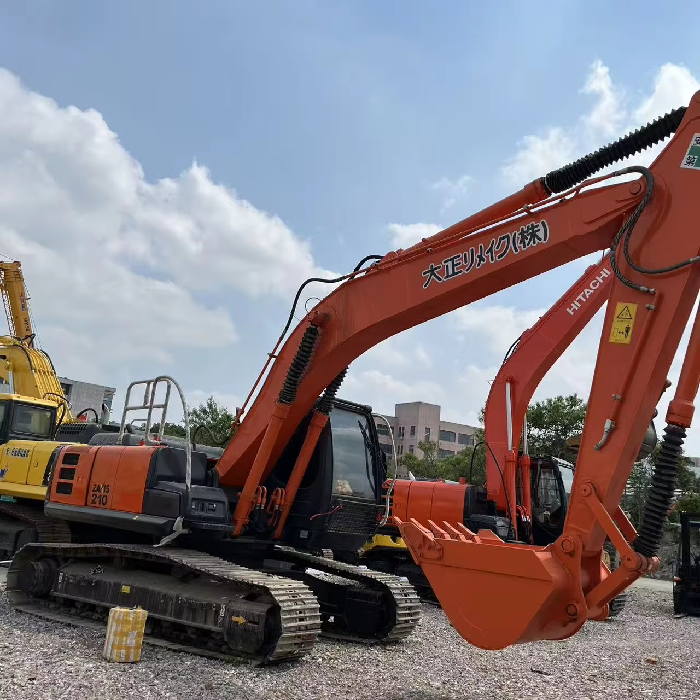

Refurbished Hitachi Zaxis 210 Excavator
The Hitachi Zaxis 210 Excavator is a reliable, high-performance machine widely used in the construction, demolition, and landscaping industries. Known for its excellent fuel efficiency, precise control, and robust hydraulic system, the Zaxis 210 is well-suited for a wide range of tasks, including digging, trenching, grading, and lifting. By opting for a refurbished Zaxis 210, businesses can benefit from all the powerful capabilities of a new unit but at a significantly lower cost, making it a smart investment for contractors looking to enhance their productivity while staying within budget.
Honestly, it's almost impossible to buy a brand new excavator from China. They either don't exist or are made in China. If a Chinese seller tells you their Caterpillar/Komatsu/Volvo/Kobelco/Hitachi is brand new, they're lying. Therefore, a refurbished excavator is your best bet.

Here are the detailed specifications for a refurbished Hitachi Zaxis 210 excavator (ZX210LC-3 or ZX210-5G):
Operating Weight and Dimensions
- Operating Weight: ~21,000–22,000 kg
- Transport Length: ~9.5–9.7 meters
- Transport Width: ~2.99–3.19 meters
- Transport Height: ~3.0–3.2 meters
- Tail Swing Radius: ~3.0–3.2 meters
- Track Width: 600 mm standard
- Undercarriage: Long carriage (LC) configuration
Engine and Powertrain
- Engine Model: Isuzu AH-4HK1X (Tier 2 or Tier 3 compliant)
- Rated Power Output: ~123–128 kW (165–172 hp) @ 2,000 rpm
- Fuel Tank Capacity: ~400 liters
- Travel Speed: ~5.5 km/h
- Swing Speed: ~11 rpm
- Drive Type: Hydrostatic with planetary final drives
Hydraulic System
- Main Pump Type: Dual axial piston pumps with HIOS III hydraulic system
- Flow Rate: ~2 × 270–300 L/min
- System Pressure: Up to 34.3 MPa
- Hydraulic Oil Capacity: ~300 liters
- Efficiency Features:
- Boom regenerative circuit
- Swing priority valve
- Auto hydraulic warm-up
- ECO mode for fuel savings
Performance Metrics
- Bucket Capacity: ~0.8–1.2 m³ (SAE heaped)
- Max Digging Depth: ~6.5 meters
- Max Reach (Horizontal): ~10.5 meters
- Max Dump Height: ~6.8 meters
- Bucket Digging Force: ~150–160 kN
- Arm Digging Force: ~110–120 kN
Cab and Operator Features
- Cab Type: ROPS/FOPS certified
- Display: LCD monitor with diagnostics and ECO gauge
- Controls: Pilot-operated joysticks with auxiliary hydraulic circuit
- Comfort: Adjustable seat, HVAC, low-noise cab
- Visibility: Wide glass area, rear-view camera, LED work lights
Attachments Compatibility
- Standard Bucket: ~1.0 m³
- Optional Tools: Hydraulic breaker, demolition shear, ripper, compactor
- Quick Coupler: Hydraulic or manual quick hitch
Refurbishment Scope
Refurbished ZX210 units typically include:
- Engine Overhaul: Turbocharger, injectors, cooling system
- Hydraulic Restoration: Pump recalibration, valve block testing, hose replacement
- Electrical Diagnostics: Monitor, sensors, wiring harness
- Cab Reconditioning: Seat, joysticks, HVAC, repainting
- Structural Repairs: Boom/bucket welding, bushing replacement, undercarriage rebuild
Overview of the Hitachi Zaxis 210 Excavator
The Hitachi Zaxis 210 is a mid-sized tracked hydraulic excavator designed for optimal performance in a wide variety of demanding applications. Its balance of power, fuel efficiency, and precise control makes it an ideal choice for contractors who need a versatile and reliable machine. Whether you're working in tight spaces or on large construction sites, the Zaxis 210 provides the performance and reliability required to get the job done.
When refurbished, the Zaxis 210 undergoes a thorough reconditioning process, which includes replacing worn-out components with genuine Hitachi parts. This ensures that the machine is restored to its original factory specifications, allowing it to deliver excellent performance at a reduced price compared to a new unit.
Key Specifications of the Hitachi Zaxis 210 Excavator
The Hitachi Zaxis 210 is built for efficiency and power. Below are its key specifications:
-
Operating Weight: Approximately 21,000 - 23,000 kg (46,300 - 50,700 lbs)
-
Engine Power: 162 hp (121 kW)
-
Max Digging Depth: Up to 6.3 meters (20.7 feet)
-
Maximum Reach: 9.1 meters (29.8 feet)
-
Bucket Capacity: Typically 1.0 - 1.2 cubic meters (35 - 42 cubic feet)
-
Fuel Tank Capacity: Around 350 - 450 liters (92 - 119 gallons)
-
Travel Speed: Up to 5.5 km/h (3.4 mph)
These specifications make the Zaxis 210 a great fit for applications that require deep excavation, heavy lifting, and efficient material handling. Its fuel-efficient engine allows businesses to save on operational costs, while its hydraulic system ensures fast and precise control for various tasks.
Performance and Efficiency of the Zaxis 210
The Hitachi Zaxis 210 is engineered to provide high performance and fuel efficiency across a variety of demanding tasks. From digging and lifting to grading and material handling, this excavator offers exceptional productivity, all while keeping operational costs low.
Performance Highlights:
-
Efficient Hydraulic System: The Zaxis 210 is equipped with a cutting-edge hydraulic system that ensures smooth and precise control of the boom, arm, and bucket. This system allows for faster cycle times and increased productivity, particularly when working with heavy loads or tough terrain.
-
Fuel Efficiency: The Zaxis 210’s fuel-efficient engine is one of its standout features. It is designed to minimize fuel consumption without compromising on power, helping businesses save on fuel costs while maintaining high performance.
-
Powerful Digging and Lifting: The Zaxis 210 excels in tasks requiring substantial digging depth and lifting power. Whether you need to dig deep trenches, lift heavy materials, or perform tough excavation tasks, this machine is up to the challenge.
-
Responsive Control: The Zaxis 210 offers excellent control for operators, even in tight or congested work areas. Its responsive controls and smooth operation make it easier to perform delicate tasks with accuracy, improving overall job site efficiency.
Durability and Longevity of the Zaxis 210
The Hitachi Zaxis 210 is built to withstand the rigors of demanding work environments, ensuring long-lasting durability and reliability. Whether working in harsh conditions or with heavy materials, the Zaxis 210 is designed to provide years of dependable service.
Durability Features:
-
Heavy-Duty Undercarriage: The Zaxis 210 features a durable undercarriage that is built to handle rough terrain and heavy workloads. The tracks, rollers, and sprockets are designed for extended wear, ensuring smooth operation even in challenging conditions.
-
Reliable Engine: The Zaxis 210 is powered by a durable engine designed to perform under high-stress conditions. With proper maintenance, the engine can provide thousands of hours of service, offering businesses long-term value and reliability.
-
Robust Hydraulic System: The hydraulic system is built to perform reliably under high pressure, providing smooth operation and efficiency even in the most demanding tasks. This makes the Zaxis 210 a great choice for projects that require constant, high-power output.
Comfort and Safety of the Zaxis 210
Operator comfort and safety are top priorities in the design of the Zaxis 210. The machine offers a spacious and ergonomic cabin, which helps reduce operator fatigue while ensuring high levels of safety on the job site.
Comfort and Safety Features:
-
Ergonomic Cabin Design: The Zaxis 210 features a spacious and comfortable cabin with adjustable seating, easy-to-use controls, and excellent visibility. The cabin is designed to reduce operator fatigue during long shifts, allowing for more efficient work.
-
Noise and Vibration Reduction: The cabin is equipped with noise and vibration-reducing features, ensuring a more comfortable and quieter work environment. This helps operators maintain focus and productivity, even during long working hours.
-
Safety Features: The Zaxis 210 is equipped with Roll Over Protection (ROPS) and Falling Object Protection (FOPS) to protect the operator in hazardous environments. The stable design and low center of gravity also enhance safety, especially when working on uneven terrain.
Versatility and Attachments for the Zaxis 210
The Hitachi Zaxis 210 is a versatile excavator that can be equipped with a range of attachments to suit various tasks. Whether you need to dig, grade, lift, or demolish, the Zaxis 210 can be adapted to meet the requirements of the job.
Common Attachments for the Zaxis 210:
-
Buckets: The Zaxis 210 can be equipped with a variety of bucket attachments, including general-purpose, heavy-duty, and grading buckets. These buckets typically range from 1.0 to 1.2 cubic meters (35 - 42 cubic feet) in capacity, making them ideal for digging, material handling, and grading.
-
Hydraulic Breakers: For demolition applications, the Zaxis 210 can be fitted with a hydraulic breaker to easily break through concrete, rock, and other tough materials.
-
Augers: Auger attachments are useful for drilling precise holes for foundations, posts, or other applications requiring deep and narrow holes.
-
Grapples: For lifting and handling materials like scrap metal, logs, or debris, the Zaxis 210 can be equipped with a grapple attachment.
-
Quick Couplers: Quick couplers allow operators to rapidly change between different attachments, reducing downtime and increasing productivity.
Benefits of Purchasing a Refurbished Hitachi Zaxis 210 Excavator
Opting for a refurbished Zaxis 210 excavator offers numerous benefits, particularly for businesses that want to minimize equipment costs without compromising on quality.
Key Benefits:
-
Cost Savings: Refurbished Zaxis 210 excavators are more affordable than new units, providing an excellent opportunity for businesses to save on upfront costs while still receiving a high-performance machine.
-
Thorough Reconditioning: Refurbished Zaxis 210 units undergo a detailed inspection and reconditioning process, where worn parts are replaced with genuine Hitachi components. This ensures that the machine meets factory specifications and is ready for heavy-duty work.
-
Warranty: Many refurbished units come with a warranty, giving businesses peace of mind in case of unexpected mechanical issues. The warranty ensures that the machine will continue to perform reliably after purchase.
-
Sustainability: Purchasing refurbished equipment is an environmentally responsible choice. It helps reduce waste and extend the life of existing machinery, contributing to sustainability in the heavy equipment industry.
Maintenance Tips for the Hitachi Zaxis 210 Excavator
Regular maintenance is essential to keep the Zaxis 210 in optimal condition and extend its lifespan. By following a proactive maintenance routine, businesses can prevent costly repairs and maintain efficient operation.
Maintenance Recommendations:
-
Engine Maintenance: Regularly check engine oil levels, replace air filters, and monitor coolant levels to prevent overheating and ensure the engine runs efficiently.
-
Hydraulic System: Inspect hydraulic hoses for leaks and replace hydraulic filters as needed. Keeping the hydraulic system clean and in good condition ensures smooth and reliable operation.
-
Undercarriage: Regularly inspect the undercarriage, especially the tracks, sprockets, and rollers, for signs of wear. Replacing damaged components in a timely manner can help avoid further damage and downtime.
-
Attachments: Inspect attachments such as buckets, grapples, and augers for signs of wear and tear. Replace or repair damaged parts to maintain attachment functionality.
Conclusion
The Hitachi Zaxis 210 Excavator is a powerful and versatile machine that offers excellent performance, efficiency, and durability for a wide range of tasks. Purchasing a refurbished Zaxis 210 allows businesses to benefit from all the capabilities of a new unit at a significantly reduced price. With proper maintenance, the Zaxis 210 can continue to serve operators for many years, making it a valuable addition to any construction or excavation fleet. Whether you're involved in digging, grading, lifting, or demolition, the Zaxis 210 is a dependable and cost-effective choice for your heavy equipment needs.
Our Commitment
- 2 years / 4000 hours warranty.
- EPA certified.
- No sweatshop labor.
Contacts

- [email protected]
- Youtube Instagram Facebook
- Navigation: G206 (Sishu Bridge) in Changfeng County, Hefei City, Anhui Province, 200 meters north to the east